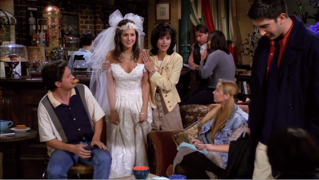

A primeira temporada introduz os seis personagens principais:
Rachel, Monica, Phoebe, Joey, Chandler e Ross. Rachel chega
no Central Perk, após deixar seu noivo Barry no altar e se
mudar para o apartamento de Mônica, enquanto Ross supera o fim
do seu casamento. Ross tenta constantemente
dizer a Rachel que a ama, enquanto sua ex-esposa lésbica, Carol,
está esperando seu bebê.
Joey é apresentado como um ator lutando
por seu espaço, enquanto Phoebe trabalha como massagista.
Chandler termina com namorada Janice, que
frequentemente retorna em outros episódios. No final da temporada,
Chandler acidentalmente revela que Ross ama Rachel em seu aniversário,
que percebe que ela se sente da mesma maneira.
Melhores episódios:
- "Aquele com George Stephanopoulos" (01x04)
- "Aquele do Pôquer" (01x18)
- "Aquele do Macaco" (01x10)
- "Aquele com Uma Dúzia de Lasanhas" (01x12)
- "Aquele do Blecaute" (01x07)
